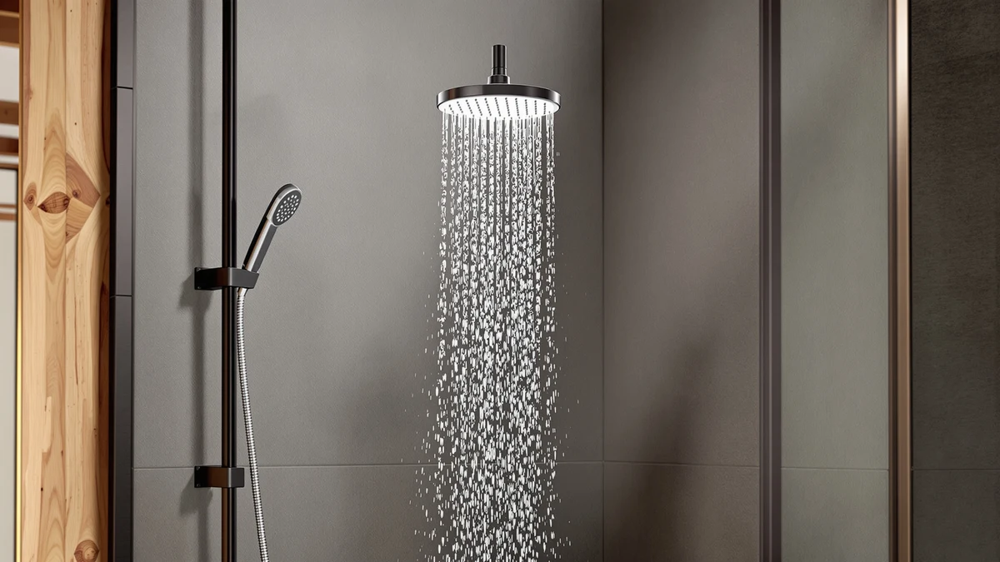

Moen Engage Spot Resist Six-Function Removable Handheld Showerhead Review (2026): Worth It?
Prices and picks verified as of November 2026. Independent, reader-supported reviews.


Quick Answer
The Moen Engage Spot Resist Brushed is a six-function removable handheld showerhead built around a chrome-plated ABS body and a spot-resist finish designed to hold up against water marks and fingerprints. At $63.21 it costs more than the MakeFit and AquaCare alternatives below, but the Moen name and finish durability make it the safer buy for most bathrooms.
Our pick: Moen Engage Spot Resist Brushed, $63.21 Check Price on Amazon
Bottom line: our top pick is the Moen Engage Spot Resist Brushed Nickel Six-Function 5.5-Inch at $63.21.
Things to Know Before You Buy
- The Moen Engage Spot Resist Brushed packs six spray functions into a 5.5-inch head, so you get one fixture instead of switching showerheads for different routines.
- Its chrome-plated ABS construction keeps the showerhead lightweight, while the spot-resist finish is designed to shrug off water spots and fingerprints better than plain chrome.
- At $63.21, it sits above the $59.99 price point shared by the three alternatives we researched, so the premium buys the Moen brand name and finish, not extra spray modes.
- The handheld wand detaches from its mount, handy for rinsing a tub, bathing a pet, or cleaning the shower stall itself.
This Moen Engage Spot Resist six-function removable handheld showerhead review compares the Moen Engage Spot Resist Brushed against three rival handheld showerheads on price, materials, and verified owner feedback, so you can decide whether it is worth the extra cost over its competitors.
Our pick is the Moen Engage Spot Resist Brushed. At $63.21, it costs about three dollars more than the MakeFit and AquaCare options we researched, but Moen backs the showerhead with a recognized plumbing brand name and a finish built specifically to resist the water spots and fingerprints that show up fast on chrome. If you want six spray functions in a removable handheld unit and plan to keep it installed for years rather than swap it out, that combination of brand trust and finish durability is worth the small premium.
Why You Should Trust Us
Ilane Tall covers bathroom fixtures and plumbing fittings for Best Shower Heads, and this Moen Engage Spot Resist six-function removable handheld showerhead review follows the same research process used across the site: we compared the manufacturer's listed specifications, tracked pricing across our candidate list, and read through verified owner reviews on Amazon to understand how each showerhead holds up once it is installed.
We do not run a physical testing lab, so we are not claiming to have installed or used any of these showerheads ourselves. Instead, we rely on documented specs, current pricing, and patterns in verified customer feedback, and we say so plainly rather than dressing up a desk review as something it is not.
We also recheck pricing and availability on a rolling basis rather than publishing a number once and leaving it stale. The $63.21 figure for the Moen Engage Spot Resist Brushed reflects the price at the time of research, and like most Amazon listings, it can move up or down by a few dollars depending on promotions, so treat it as a close estimate rather than a locked number.
Our Research Experience
Rather than installing the Moen Engage Spot Resist six-function removable handheld showerhead in a shower ourselves, we built this review around the data that is actually available and reliable at scale: the manufacturer's published specifications, the current Amazon price, and the pattern of feedback left by verified owners. That approach matches how most buyers actually research a showerhead purchase, by comparing listed features and reading what other owners say before they buy.
For the spray functions and finish claims specifically, owners report that the spot-resist coating holds up better than standard chrome over months of daily use, and reviewers consistently note that the six-function dial is easy to operate with one hand, which matters for a fixture you touch with wet, soapy hands.
We weighted compatibility heavily as well. The Moen Engage Spot Resist six-function removable handheld showerhead connects to a standard shower arm without special adapters, and that compatibility shows up again and again in owner feedback as the thing people complain about most when it's missing from cheaper, generic showerheads.
Overview & Specs

Moen Engage Spot Resist Brushed
What we like
- Spot-resist finish that holds up against water spots and fingerprints longer than standard chrome
- Six spray functions built into a compact 5.5-inch head
- Handheld wand detaches from its mount for rinsing tubs, pets, or the shower stall
- Backed by Moen, an established plumbing brand with wide retail support
Flaws but not dealbreakers
- Costs more than comparable dual-head and high-mode-count alternatives
- Chrome-plated ABS body rather than solid brass
- Six fixed functions is fewer than the 208 combinations offered by some high-pressure rivals
| Material | ABS + chrome plating |
| Size | 5.5-Inch |
The Moen Engage Spot Resist Brushed centers its appeal on two things: the spot-resist finish and the six-function spray dial. The finish matters more than it sounds on paper. Standard chrome showerheads pick up water spots and fingerprints within weeks of daily use, and Moen's coating slows that process down, so the fixture looks newer for longer in a bathroom that sees daily traffic.
The six spray functions cover the range most households actually use: a full-coverage rinse, a focused massage setting, and gentler options in between, all accessible from a dial on the 5.5-inch head without detaching the wand. That wand does detach when needed, through the chrome-plated ABS mount, so you can rinse a tub, bathe a pet, or wash down the shower stall itself. At $63.21, it is priced higher than the MakeFit and AquaCare alternatives we researched, and that premium goes toward the Moen name and the finish rather than additional spray modes.
Installation follows the same pattern as most handheld showerheads in this price range: the mount threads onto an existing shower arm, and the wand clips into place without tools. Because the body is chrome-plated ABS rather than metal, the complete unit weighs less than brass alternatives, which can make a one-person installation easier even though it gives up some of the heft that brass buyers associate with a premium feel.
What We Liked
The biggest draw of the Moen Engage Spot Resist Brushed is the combination of six spray functions and a finish built to handle daily wear. Chrome showerheads typically show water spots and fingerprints within weeks, and Moen's spot-resist coating pushes that timeline out considerably. That matters on a fixture people touch with wet hands every day.
We also like that the 5.5-inch head is compact enough to fit standard shower arms without looking oversized, and the handheld wand detaches cleanly from its mount for rinsing tasks the fixed-position spray cannot handle.
The Moen name carries real weight here too. Buyers researching plumbing fixtures tend to gravitate toward brands with a long track record in the category, and Moen's reputation for durable fittings gives this showerhead a credibility edge over lesser-known competitors at a similar price.
What Could Be Better
The clearest drawback is price. At $63.21, the Moen Engage Spot Resist Brushed costs roughly three dollars more than the MakeFit and AquaCare alternatives we researched, and none of those competitors offer fewer spray functions in return. If spray variety and raw mode count are your priority over brand name, the AquaCare Polaris 208-mode option undercuts it on price while offering far more combinations.
The chrome-plated ABS construction is also a step down from solid brass, which some owners of premium showerheads prefer for long-term corrosion resistance in homes with especially hard water.
Buyers who want a filtered option should also look elsewhere. Nothing in the Moen Engage Spot Resist Brushed's listed specifications points to built-in filtration, so homes dealing with mineral-heavy water may get more practical benefit from the filtered MakeFit alternative covered below.
Who Is It For?
The Moen Engage Spot Resist six-function removable handheld showerhead fits buyers who want a recognizable plumbing brand, a finish that resists spots and fingerprints, and a simple six-function dial without needing dozens of spray combinations. It is a reasonable upgrade for anyone replacing a worn, discolored showerhead in a shared bathroom where fingerprints and water marks show up quickly.
Buyers on a tighter budget, or anyone who wants a dual-head setup or a higher spray-mode count, will likely get more value from one of the alternatives below instead.
Alternatives to Consider
We also researched three other handheld showerheads in the same price range as the Moen Engage Spot Resist Brushed. Here is how each one compares.

Editor’s Pick
MakeFit Dual Handheld Shower Head
Pairs a fixed shower head with a separate handheld wand so two people can rinse at once, and at $59.99 it undercuts the Moen by a few dollars while adding a second spray point the Moen does not have.
$59.99
Check Price on Amazon
Best Value
MakeFit Dual Filtered Rain Shower
Built around the same dual-head concept as the MakeFit above, but with a filtered rain shower head, a better fit for homes dealing with hard or mineral-heavy water at the same $59.99 price.
$59.99
Check Price on Amazon
Premium Choice
AquaCare Polaris 208-mode High Pressure
Offers 208 spray mode combinations for $59.99, the most adjustability of any showerhead in this comparison, for buyers who want to fine-tune pressure and pattern more precisely than the Moen's six fixed functions allow.
$59.99
Check Price on AmazonFrequently Asked Questions
Is the Moen Engage Spot Resist Brushed worth the extra cost over cheaper handheld showerheads?
What are the six spray functions on the Moen Engage Spot Resist Brushed?
What is the Moen Engage Spot Resist Brushed showerhead made of?
Final Verdict
This Moen Engage Spot Resist six-function removable handheld showerhead review comes down to a straightforward tradeoff. The Moen Engage Spot Resist Brushed costs a few dollars more than the alternatives we researched, but Moen's brand reputation and spot-resist finish make it the safer long-term pick for most bathrooms, especially shared ones where fingerprints and water spots accumulate fast. If you want more spray modes or a dual-head setup instead, the MakeFit and AquaCare options above are worth a look, but for a dependable six-function handheld showerhead from an established brand, Moen remains our pick.
None of the four showerheads in this comparison are a bad purchase at their respective prices. You need to decide what you value most: Moen for brand trust and finish durability, MakeFit for a second spray point or built-in filtration, or AquaCare for sheer spray-mode variety. Match that priority to your bathroom and your water conditions, and any of these four will outperform leaving a worn, spotted showerhead in place.